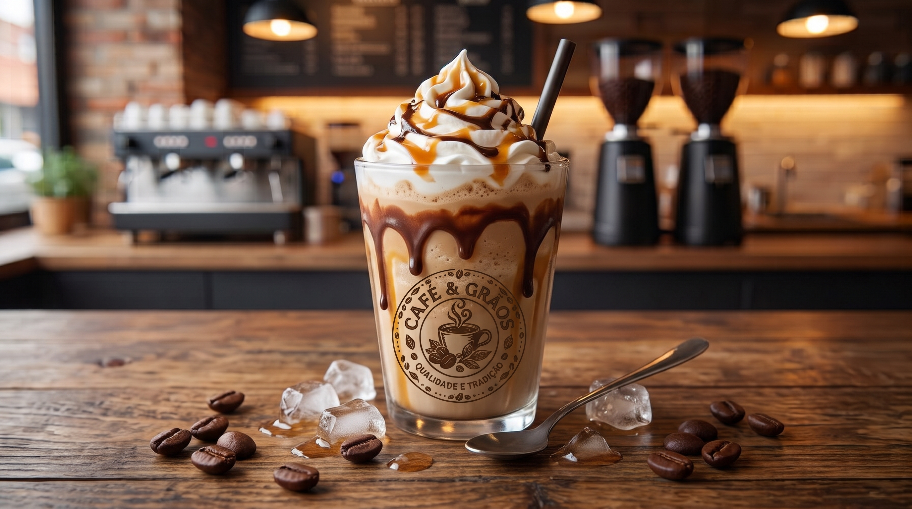

Descubra seu perfil de café
Responda o questionário rápido e descubra as NOTAS, ACIDEZ, e MÉTODOS DE PREPAROS ideais para o seu paladar.

Seja bem-vindo ao seu painel.
Veja o andamento do seu perfil de Café e novidades recomendadas.
Responda o questionário rápido e descubra as NOTAS, ACIDEZ, e MÉTODOS DE PREPAROS ideais para o seu paladar.
Gerencie os dados salvos sobre seus sabores favoritos, frequência de consumo e métodos de preparo preferidos.

Frapuccino: O nosso clássico gelado.
Café batido com gelo, leite e caldas especiais, coberto com uma generosa porção de chantilly e coberturas. A escolha ideal para refrescar os dias quentes.